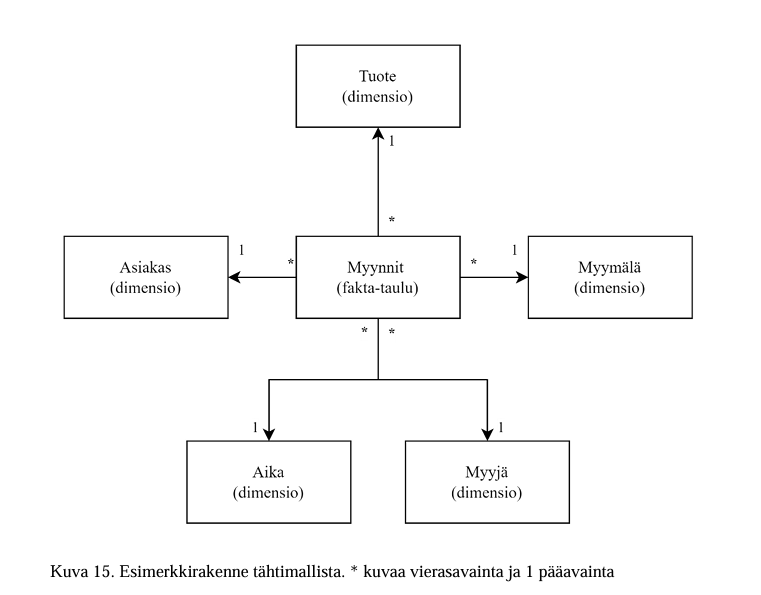

Tähtimalli on vähintään kahdesta taulusta koostuva tietomalli, joka on yksi suosituimmista Power BI:ssä ja SSAS:ssä käytetyistä tietomallityypeistä. Malli koostuu yhdestä faktataulusta ja useasta dimensiotaulusta.
Tähtimallin toiminta perustuu normalisoituun relaatiotietokantaan, jonka faktataulussa sijaitsevat transaktiotason tapahtumat, kuten myyntitapahtumat. Dimensiotauluissa taas sijaitsevat dataa kuvailevat tiedot, kuten asiakas-, tuote- tai aikataulut.

Kuvassa * merkitsee vierasavainta (FK) ja 1 pääavainta (PK).
Tähtimallin taulujen väliset yhteydet perustuvat avainkenttiin. Kaavioissa pääavain merkitään numerolla 1 ja vierasavain tähdellä *.
| Avain | Lyhenne | Sijainti | Tehtävä | Esimerkki |
|---|---|---|---|---|
| Pääavain | PK (Primary Key) | Dimensiotaulu | Yksilöi jokaisen rivin — ei duplikaatteja, ei tyhjiä arvoja | AsiakasTunnus dimensiossa Asiakas |
| Vierasavain | FK (Foreign Key) | Faktataulussa | Viittaa dimensiotaulun pääavaimeen — luo yhteyden taulujen välille | AsiakasTunnus faktataulussa Myynti |
Yhteys kulkee aina samaan suuntaan: faktataulu.FK → dimensiotaulu.PK. Faktataulussa yhdellä myyntirivillä voi olla useita vierasavaimia — yksi asiakkaalle, yksi tuotteelle, yksi päivämäärälle ja niin edelleen. Jokainen niistä osoittaa vastaavan dimensiotaulun pääavaimeen. Juuri tämä rakenne muodostaa tähtimallin "tähden": faktatauluun osoittavat dimensiot ympärillä.
Normalisoinnilla tarkoitetaan sitä, että data sijaitsee vain yhdessä paikassa. Tämä tekee tietomallista yksiselitteisen ja estää datan toistumisen, mikä puolestaan vähentää teknistä velkaa ja helpottaa laskurien (measures) tekemistä. Ferrari ja Russo (2017) korostavat, että tähtimallin suurin hyöty on sen helppo ymmärrettävyys ja hallinta.
Hyvin suunniteltu tähtimalli pienentää tietomallin kokoa huomattavasti verrattuna denormalisoituun "yhteen isoon tauluun". Russo ja Ferrari (2021) kertovat verkkoartikkelissaan, että tähtimallia käyttävän pienemmän tietomallin muistikoko on 16,80 GB, kun taas denormalisoitu yhtä taulua käyttävä malli vie 44,51 GB. Analyysipalvelimella käytettävän muistin määrä on siis yhteen tauluun pakatussa mallissa 2,65 kertaa suurempi.
Hyvin suunnitellun tietomallin hyödyt ovat taloudellisesti merkittävät. Esimerkiksi Azure Analysis Services -palvelua käytettäessä alle 25 GB:n muistikanta maksaa Microsoftin hinnoittelun mukaan 1 323 € kuussa, kun taas huonommin suunnitellun mallin vaatima vähintään 50 GB:n muistikanta maksaa 2 647 € kuussa. Tämä tarkoittaa käytännössä hinnan tarpeetonta tuplaantumista. Hyvällä tietomallisuunnittelulla ja normalisoiduilla tähtimalleilla voidaan vuosittain tehdä todistettavasti vähintään 15 888 € säästöt. Saadut hyödyt ovat todennäköisesti vielä suurempia, sillä tietomallit käyttävät muistia datan tallentamisen lisäksi myös laskennan suorittamiseen.
| Mallityyppi | Muistikoko | Azure AS -hinta / kk |
|---|---|---|
| Tähtimalli (normalisoitu) | 16,80 GB | 1 323 € |
| Denormalisoitu yksittäinen taulu | 44,51 GB | 2 647 € |
Tähtimalli toimii parhaiten Power BI:ssä — pyri aina rakentamaan tähtimalli.